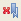

É possível localizar um tópico mais facilmente configurando um marcador e salvando-o na visualização Favoritos do sistema de ajuda.
Procedimento
- Para configurar um indicador no tópico atual, na área de janela
do tópico, clique em Indicador
(
 ) na
barra de ferramentas.
) na
barra de ferramentas. - Para visualizar seus indicadores, clique na guia Indicadores
(
 ) na barra de ferramentas. Nota:
) na barra de ferramentas. Nota:- Se o sistema de ajuda estiver executando no modo do centro de
informações, o botão Marcador
() será exibido apenas quando você navega em páginas
com o Internet Explorer. É possível clicar no menu
Favoritos do Internet Explorer para localizar os indicadores que criou.
- Se o sistema de ajuda estiver sendo executado no modo independente, clique na guia Indicadores
() para encontrar seus indicadores.
- Se o sistema de ajuda estiver executando no modo do centro de
informações, o botão Marcador
(
- Para excluir um indicador, clique na guia Indicadores
(), selecione o nome
do tópico na área de janela Tópico e clique em Excluir Indicador Selecionado (
 ) na
barra de ferramentas.
) na
barra de ferramentas. - Para excluir todos os indicadores, clique na guia Indicadores
() e clique em Excluir todos os indicadores () na barra de ferramentas.